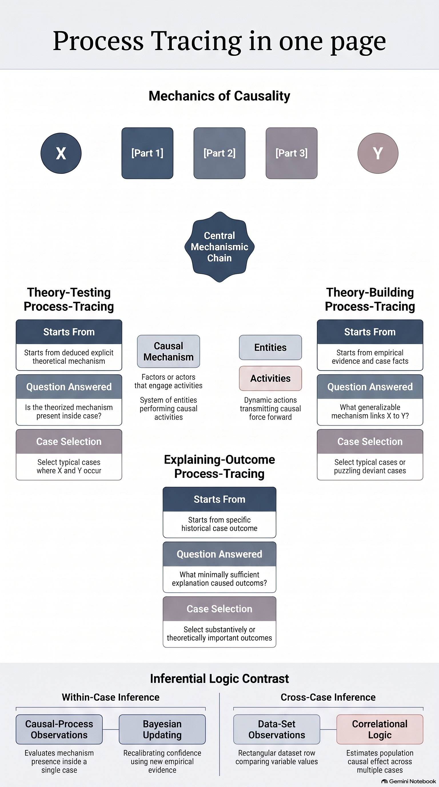

Qualitative Methods in Political Science · Week 3 · 9 Nov 2026
Process Tracing: Within-Case Methods
How do you show what caused an outcome inside a single case? This week's readings build the toolkit — mechanisms, causal-process observations and the four evidence tests — and Bateson puts it to work on why Guatemalans voted for Ríos Montt.

Readings
- Derek Beach & Rasmus Brun Pedersen (2013), Process-Tracing Methods: Foundations and Guidelines
- David Collier (2011), “Understanding Process Tracing”
- Regina Bateson (2022), “Voting for a Killer: Efraín Ríos Montt’s Return to Politics in Democratic Guatemala”
Where to start: Episode 1 walks through all three readings, from Beach & Pedersen’s variants and the four tests in Collier to Bateson’s case. Pick the length that fits your commute. Episode 2 applies the method to a fresh, invented case, so you can practise before the seminar.
Podcasts and infographics are generated with Google NotebookLM from the course readings, then checked and curated by me.